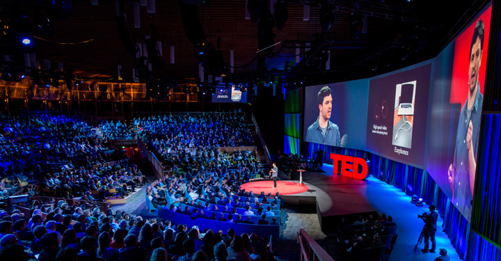

Ted Talks
A little about
TED Talks: What is it? The acronym TED comes from Technology, Entertainment and Design. In other words, it personifies what is most relevant in these areas. In practice,This is a series of lectures and meetings in which leading names in different fields of knowledge are invited to present their ideas.

TED is a non-profit organization with the aim of sharing ideas through talks, or, in Portuguese, conversations. Talks are a model of shorter and more effective talks to draw attention to a single topic
TED Talks are known for their limited duration, usually ranging from 5 to 20 minutes, which makes them accessible and impactful. This short time frame is designed to maintain the audience's attention and convey information in a clear and concise manner. Since its inception, TED has evolved to include a wide range of topics, spanning areas such as science, politics, education, and art, reflecting the diversity of voices and experiences of the speakers, ranging from scientists and artists to activists and entrepreneurs.

Go to the website
ted talks- Henrique e joão Neto For more informations click here
For more informations click here